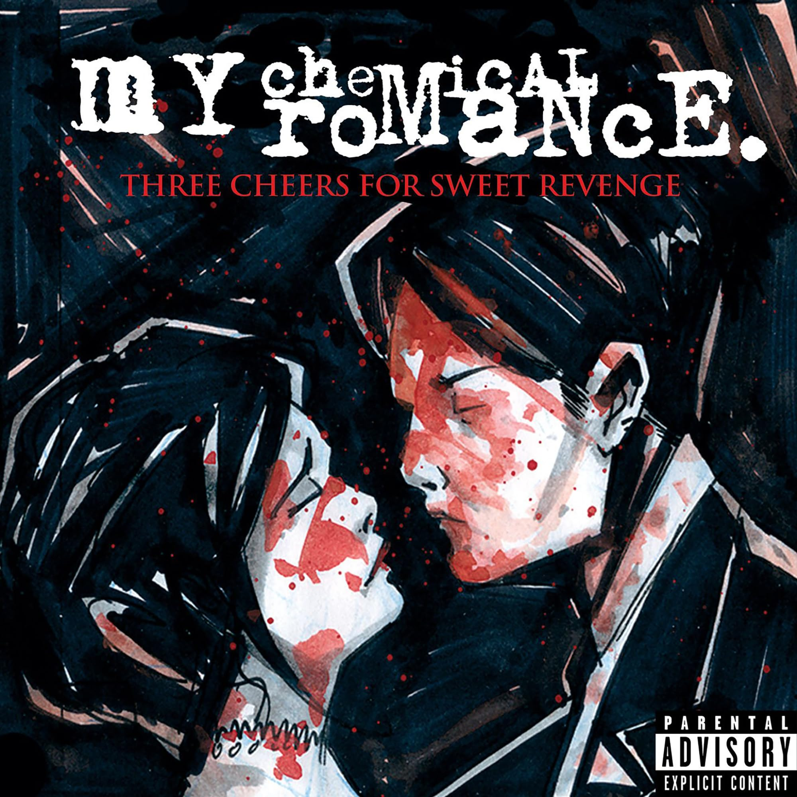

Músicas mais Famosas
"Welcome to the Black Parade" - (2006)

Álbum: The Black Parade
- Por que é famosa? Considerada o hino definitivo do MCR, essa música épica começa com um piano melancólico e explode em um rock grandioso, contando a história de "The Patient" (eu-lírico do álbum) enfrentando a morte.
- Legado: Virou um símbolo da cultura emo e alternativa, com seu refrão poderoso: "We'll carry on!"
- Curiosidade: Foi eleita uma das melhores músicas dos anos 2000 pela Rolling Stone.
"Helena" - (2004)

Álbum: Three Cheers for Sweet Revenge
- Por que é famosa? Uma balada dramática e emocional, escrita em homenagem à avó de Gerard e Mikey Way.
- Videoclipe: Um dos mais marcantes da banda, com um funeral gótico e coreografia sincronizada.
- Por que é famosa? A música fala sobre se sentir desajustado, não pertencente a algo, com um refrão cativante e letras sobre inseguranças e falsas aparências.
- Videoclipe: Uma sátira de filmes de colégio americano com cenas cômicas.
- Por que é famosa? Tece uma crítica social sobre a violência juvenil, padrões estéticos, repressão e alienação dos adolescentes.
- Som: Mais direta e punk que outras faixas do álbum.
- Curiosidade: Gerard Way disse que escreveu a música após se sentir intimidado por um grupo de adolescentes no metrô.
"I'm not okay with this" - (2004)
Álbum: Three Cheers for Sweet Revenge
"Teenagers" - (2006)
Álbum: The Black Parade
Voltar para a página inicial